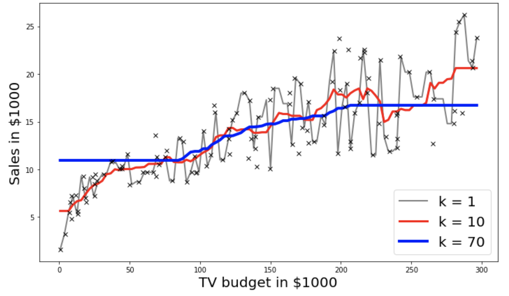

Key Word(s): Knn, Knn Regression, MSE, Data Plotting
Title :¶
Exercise: Simple kNN Regression
Description :¶
The goal of this exercise is to re-create the plots given below. You would have come across these graphs in the lecture as well.

Data Description:¶
Instructions:¶
Part 1: KNN by hand for k=1
- Read the Advertisement data.
- Get a subset of the data from row 5 to row 13.
- Apply the kNN algorithm by hand and plot the first graph as given above.
Part 2: Using sklearn package
- Read the Advertisement dataset.
- Split the data into train and test sets using the
train_test_split()function. - Set
k_listas the possible k values ranging from 1 to 70. - For each value of
kink_list:- Use
sklearn KNearestNeighbors()to fit train data. - Predict on the test data.
- Use the helper code to get the second plot above for k=1,10,70.
- Use
Hints:¶
np.argsort() Returns the indices that would sort an array.
df.iloc[] Returns a subset of the dataframe that is contained in the column range passed as the argument.
plt.plot() Plot y versus x as lines and/or markers.
df.values Returns a Numpy representation of the DataFrame.
pd.idxmin() Returns index of the first occurrence of minimum over requested axis.
np.min() Returns the minimum along a given axis.
np.max() Returns the maximum along a given axis.
model.fit() Fit the k-nearest neighbors regressor from the training dataset.
model.predict() Predict the target for the provided data.
np.zeros() Returns a new array of given shape and type, filled with zeros.
train_test_split(X,y) Split arrays or matrices into random train and test subsets.
np.linspace() Returns evenly spaced numbers over a specified interval.
KNeighborsRegressor(n_neighbors=k_value) Regression-based on k-nearest neighbors.
Note: This exercise is auto-graded, hence please remember to set all the parameters to the values mentioned in the scaffold before marking.
# Import required libraries
import numpy as np
import pandas as pd
import matplotlib.pyplot as plt
from sklearn.neighbors import KNeighborsRegressor
from sklearn.model_selection import train_test_split
%matplotlib inline
# Read the data from the file "Advertising.csv"
filename = 'Advertising.csv'
df_adv = pd.read_csv(filename)
# Take a quick look of the dataset
df_adv.head()
| TV | Radio | Newspaper | Sales | |
|---|---|---|---|---|
| 0 | 230.1 | 37.8 | 69.2 | 22.1 |
| 1 | 44.5 | 39.3 | 45.1 | 10.4 |
| 2 | 17.2 | 45.9 | 69.3 | 9.3 |
| 3 | 151.5 | 41.3 | 58.5 | 18.5 |
| 4 | 180.8 | 10.8 | 58.4 | 12.9 |
Part 1: KNN by hand for $k=1$¶
# Get a subset of the data i.e. rows 5 to 13
# Use the TV column as the predictor
x_true = df_adv.TV.iloc[5:13]
# Use the Sales column as the response
y_true = df_adv.Sales.iloc[5:13]
# Sort the data to get indices ordered from lowest to highest TV values
idx = np.argsort(x_true).values
# Get the predictor data in the order given by idx above
x_true = x_true.iloc[idx].values
# Get the response data in the order given by idx above
y_true = y_true.iloc[idx].values
### edTest(test_findnearest) ###
# Define a function that finds the index of the nearest neighbor
# and returns the value of the nearest neighbor.
# Note that this is just for k = 1 where the distance function is
# simply the absolute value.
def find_nearest(array,value):
# Hint: To find idx, use .idxmin() function on the series
idx = pd.Series(np.abs(array-value)).idxmin()
# Return the nearest neighbor index and value
return idx, array[idx]
# Create some synthetic x-values (might not be in the actual dataset)
x = np.linspace(np.min(x_true), np.max(x_true))
# Initialize the y-values for the length of the synthetic x-values to zero
y = np.zeros((len(x)))
# Apply the KNN algorithm to predict the y-value for the given x value
for i, xi in enumerate(x):
# Get the Sales values closest to the given x value
y[i] = y[find_nearest(x, xi )[0]]
Plotting the data¶
# Plot the synthetic data along with the predictions
plt.plot(x, y, '-.')
# Plot the original data using black x's.
plt.plot(x_true, Y_true, 'kx')
# Set the title and axis labels
plt.title('TV vs Sales')
plt.xlabel('TV budget in $1000')
plt.ylabel('Sales in $1000')
![]()
--------------------------------------------------------------------------- NameError Traceback (most recent call last) /tmp/ipykernel_30/3566749308.py in <module> 3 4 # Plot the original data using black x's. ----> 5 plt.plot(x_true, Y_true, 'kx') 6 7 # Set the title and axis labels NameError: name 'Y_true' is not defined
Part 2: KNN for $k\ge1$ using sklearn¶
# Read the data from the file "Advertising.csv"
data_filename = 'Advertising.csv'
df = pd.read_csv(data_filename)
# Set 'TV' as the 'predictor variable'
x = df[[___]]
# Set 'Sales' as the response variable 'y'
y = df[___]
### edTest(test_shape) ###
# Split the dataset in training and testing with 60% training set
# and 40% testing set with random state = 42
x_train, x_test, y_train, y_test = train_test_split(___, ___, train_size=___,random_state=___)
### edTest(test_nums) ###
# Choose the minimum k value based on the instructions given on the left
k_value_min = ___
# Choose the maximum k value based on the instructions given on the left
k_value_max = ___
# Create a list of integer k values betwwen k_value_min and k_value_max using linspace
k_list = np.linspace(k_value_min, k_value_max, 70)
# Set the grid to plot the values
fig, ax = plt.subplots(figsize=(10,6))
# Variable used to alter the linewidth of each plot
j=0
# Loop over all the k values
for k_value in k_list:
# Creating a kNN Regression model
model = KNeighborsRegressor(n_neighbors=int(___))
# Fitting the regression model on the training data
model.fit(___,___)
# Use the trained model to predict on the test data
y_pred = model.predict(___)
# Helper code to plot the data along with the model predictions
colors = ['grey','r','b']
if k_value in [1,10,70]:
xvals = np.linspace(x.min(),x.max(),100)
ypreds = model.predict(xvals)
ax.plot(xvals, ypreds,'-',label = f'k = {int(k_value)}',linewidth=j+2,color = colors[j])
j+=1
ax.legend(loc='lower right',fontsize=20)
ax.plot(x_train, y_train,'x',label='train',color='k')
ax.set_xlabel('TV budget in $1000',fontsize=20)
ax.set_ylabel('Sales in $1000',fontsize=20)
plt.tight_layout()
⏸ In the plotting code above, re-run ax.plot(x_train,
y_train,'x',label='train',color='k') with x_test and y_test instead.
According to you, which k value is the best and why?¶
### edTest(test_chow1) ###
# Type your answer within in the quotes given
answer1 = '___'